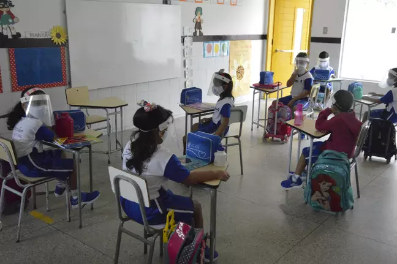

Mais da metade dos municípios mineiros não registra mortes por Covid-19 em setembro
Na Região Metropolitana de Belo Horizonte, 11 cidades não tiveram óbitos no mês passado. Veja a lista.

Na Região Metropolitana de Belo Horizonte, 11 cidades não tiveram óbitos no mês passado. Veja a lista.
As aulas presenciais vão retornar no município de Juatuba no dia 18 de outubro. Inicialmente serão os alunos do Primeiro e na sequência o Segundo e Terceiro ano. Isso se deve a uma dificuldade maior na alfabetização no modo de ensino remoto.
Para fixar as regras foi realizada uma simulação das normas e procedimentos para que o retorno das aulas siga todos os protocolos sanitários frente à COVID-19.